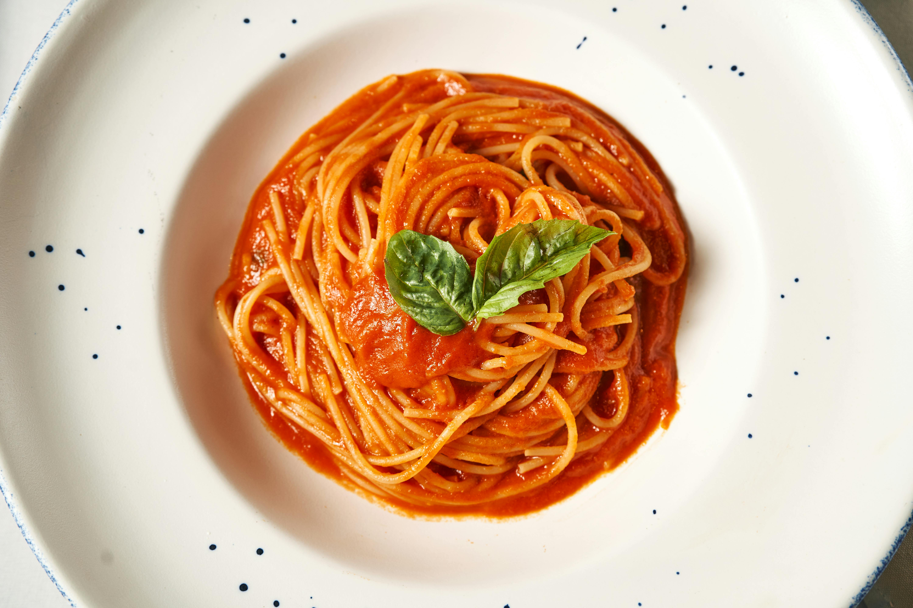

Spaghetti Bolognese is a hearty and flavourful dish originating from Italian cuisine, loved for its rich meat-based sauce.
The recipe begins with a base of sautéed onion, garlic, and sometimes carrot and celery, cooked in olive oil to build depth of flavour. Ground meat is then added and browned before being combined with tomato sauce, herbs such as basil and oregano, and a splash of wine for extra richness. The sauce is left to simmer slowly, allowing the ingredients to blend together into a thick and savoury mixture. Meanwhile, spaghetti is cooked in salted boiling water until al dente. Once everything is ready, the spaghetti is drained and served topped with the Bolognese sauce, often finished with a sprinkle of grated cheese like Parmesan. The result is a well-balanced dish, combining tender pasta with a rich, meaty sauce full of depth and aroma.
Ideal for everyday meals or gatherings, spaghetti Bolognese stands out for its comforting taste and adaptability, with variations including different meats, added vegetables, or lighter versions.